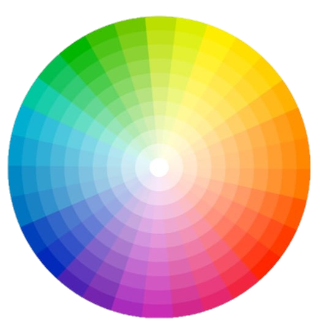

Entenda a teoria
Entender o que é psicologia das cores é o ponto de partida para escolher as nuances da sua coleção. Ou seja, podemos dizer que cada um tem a sua percepção, mas os estímulos das cores são os mesmos. Cores quentes são frequentemente interpretadas como cores alegres, estimulantes e dinâmicas. Cores frias costumam ser associados à calma e à seriedade.
